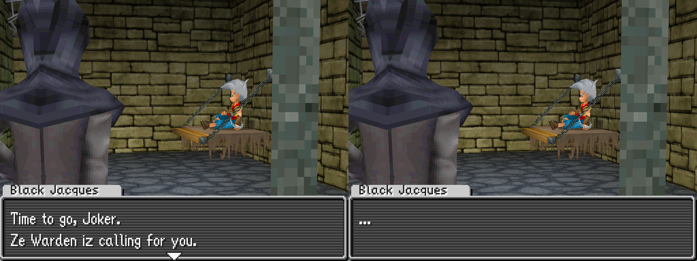
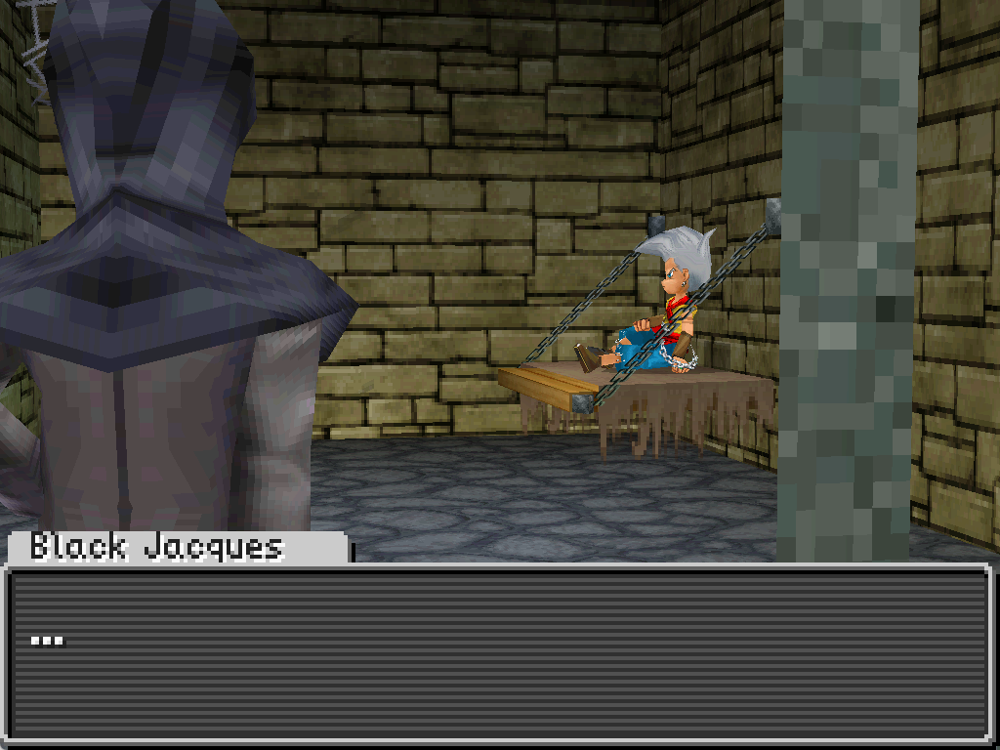

Dialog
Dialog boxes allow you to show the player character dialog or other text.
StartDialog
SpeakerName "Black Jacques"
SetDialog "[0xEA]Time to go, [0xF5].\nZe Warden iz calling for you."
SetU32 Pool_1 0.0 Const 1.0
ShowDialog
SetDialog "[0xEA]..."
SetU32 Pool_1 0.0 Const 0.0
ShowDialog
EndDialog

Overall structure
Each section of dialog has the following basic structure of instructions:
StartDialogstarts the dialog sectionSpeakerNamedetermines the character name shown for the dialog boxes (optional)SetDialogsets the text of the dialogShowDialogshows the dialog onscreen until the player presses the A buttonEndDialogends the dialog section
A dialog section can contain multiple SetDialog/ShowDialog pairs between a single StartDialog and EndDialog.
Example 1
As an example, consider the following dialog section:
StartDialog
SpeakerName "Black Jacques"
SetDialog "[0xEA]..."
SetU32 Pool_1 0.0 Const 0.0
ShowDialog
EndDialog
In this case the speaker name is Black Jacques and the text shown in the dialog box is .... All text must be surrounded in double quotes "
to indicate that it is text.

Looking at the text in the SetDialog instruction, you'll notice that it starts with [0xEA]. This is a control code. In this case, it indicates that the text is for a conversation. Most conversation text will start with [0xEA], though there are some cases where it may start with a another control code (such as [0xEB]).
SetDialog "[0xEA]..."
You'll also notice that before the ShowDialog instruction that there is a SetU32 instruction. This controls whether the dialog advance triangle appears at the bottom of the dialog box. Using 1.0 at the end shows the triangle, while using 0.0 hides it. See Value pools for a more detailed explanation of SetU32.
SetU32 Pool_1 0.0 Const 0.0
ShowDialog
Example 2
As another example, consider this actual dialog section from the first cutscene of the game:
StartDialog
SpeakerName "Black Jacques"
SetDialog "[0xEA]Time to go, [0xF5].\nZe Warden iz calling for you."
SetU32 Pool_1 0.0 Const 1.0
ShowDialog
SetDialog "[0xEA]..."
SetU32 Pool_1 0.0 Const 0.0
ShowDialog
EndDialog
Here we can notice a few things:
SpeakerNameonly needs to be used once, even if the character has multiple dialog boxes- In the first
SetDialog, there are two interesting parts:\nis used to start a new line of dialog in the same dialog box[0xF5]is the control code used to insert the player's name
- The dialog advance triangle is used for the first dialog box, but not the second
Const 1.0vsConst 0.0for theSetU32instructions
We haven't shown how to use dialog prompts (ex. Yes or No). Those are covered in the Jumps and Conditionals page.
Control codes
Control codes are special pieces of text that instruct the game to display specific information within dialog text or use a particular effect in displaying the text of the dialog box.
| Code | Purpose |
|---|---|
[0xD0] | Starts a non-conversational dialog (ex. for opening a treasure chest) |
[0xEA] | Starts a conversational dialog |
[0xEB] | Used to start some conversational dialog (exact behavior unclear) |
[0xF5] | Inserts the player's name |